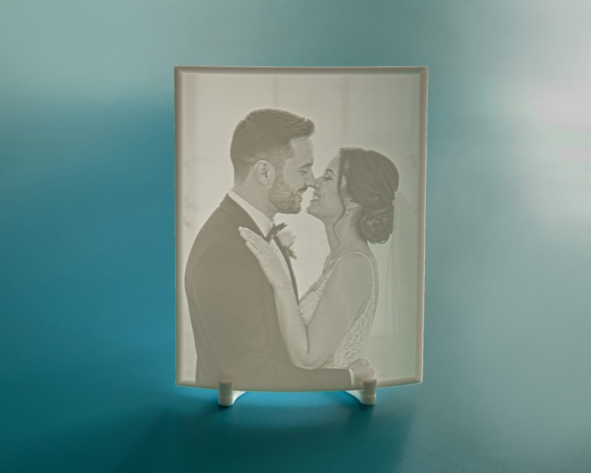
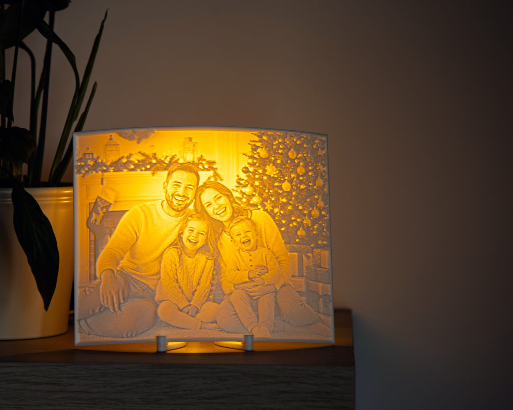
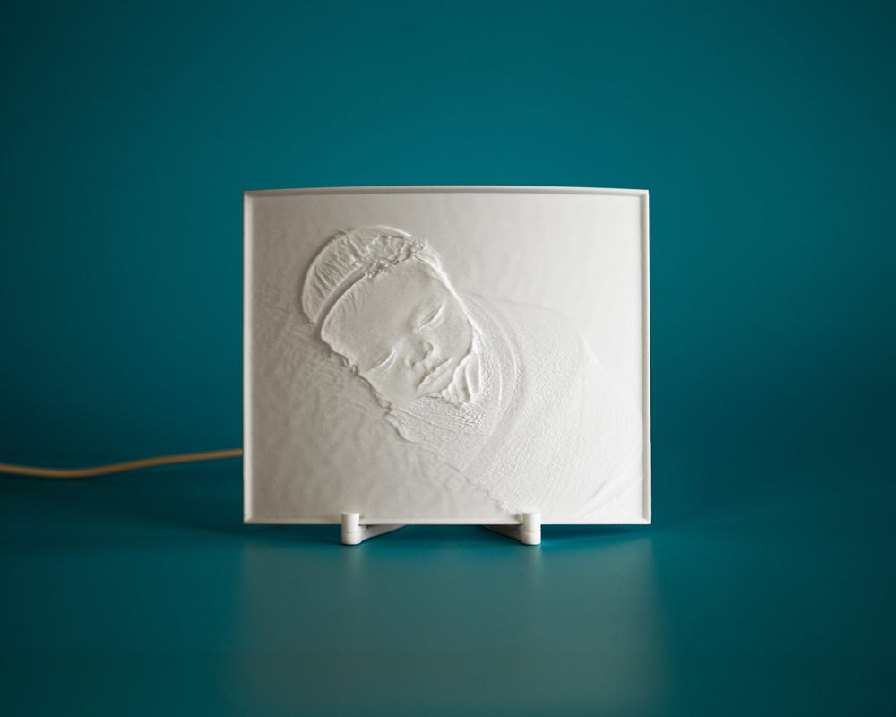
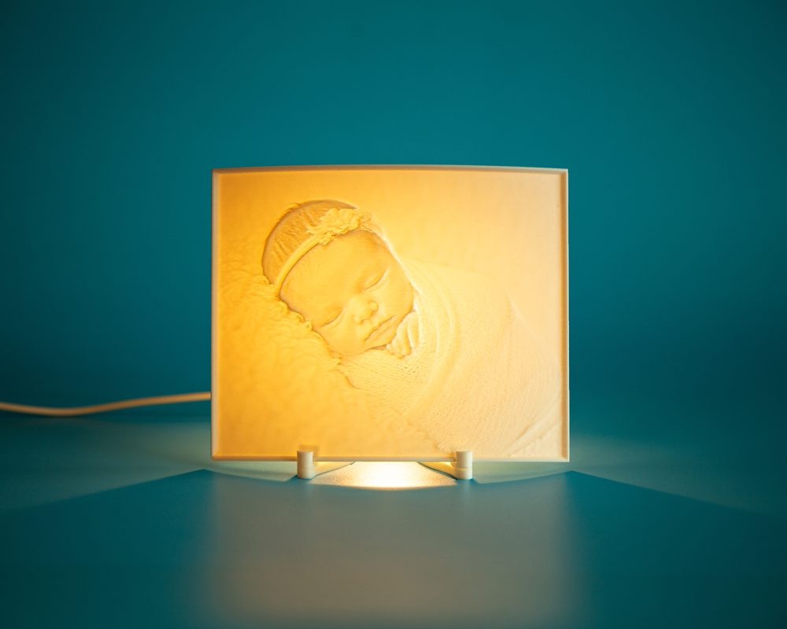

Fénykép
Fénykép
Fény·kép Stúdió
A saját fotód, 3D nyomtatva
Fény felé tartva vagy lámpával megvilágítva látszik rajta a kép. Lámpával vagy lámpa nélkül rendelheted. Budapesten készítjük, általában egy héten belül.


Közelről
Ilyen a kész termék
- Anyag: fehér PLA, 3D nyomtatva
- Méret: 15 vagy 20 cm a hosszabb oldalon
- Lámpa nélkül: állvánnyal, nappali fényben látszik a kép
- LED talppal: sötétben is világít
- Elkészítés: általában egy héten belül
Lámpával vagy lámpa nélkül
Termékeink
Beüzemelés
Hogyan üzemeld be?
-
1
Tedd le a LED talpat, és dugd be a kábelét.
-

2Illeszd a 3D fotót a talp két tartójába.
-

3Kapcsold be a lámpát: a fény hátulról átvilágítja a képet.
Lámpa nélküli változat: a 3D fotót az ajándék állványba illeszted, és fény felé, például ablak elé teszed.